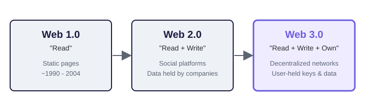

Abstract
Today most personal data on the web is collected and stored by a few large companies. Web 3.0 is a proposed next stage of the web that uses blockchains, cryptography, and peer-to-peer networks so that users, not platforms, hold their own accounts and data. Supporters say this gives people more privacy and control. This research looks at whether that promise holds up.
The project explains how decentralization and data ownership work, then examines the security and privacy risks that come with smart contracts and public ledgers. The goal is a balanced view: Web 3.0 can reduce some privacy problems, but it also creates new ones.

Important distinction: Web 3.0 does not automatically mean better privacy.
Most public blockchains are transparent by design, so every transaction can be viewed by anyone.
Key Terms
- Web 3.0
- A vision of a decentralized web where users control their identity, data, and digital assets.
- Blockchain
- A shared, append-only record of transactions kept by many computers instead of one.
- Decentralization
- Spreading control and data across many independent participants.
- Wallet
- Software that stores a user's private keys and signs transactions.
- Smart contract
- A program stored on a blockchain that runs automatically when its conditions are met.
- Pseudonymity
- Acting under an identifier (such as a wallet address) that is not your real name but can still be traced.
Table of Contents
- 01 Decentralization & Data Ownership How blockchains move control of data from companies to users.
- 02 Smart Contracts, Security & Privacy Risks The new threats that come with public, permanent code.
- 03 Key Concepts Ten essential ideas explained in plain language.
- 04 Knowledge Quiz Ten questions to test what you learned, with a 15-minute timer.
- 05 References & Resources Sources used in this research and places to learn more.
- 06 About The author and the goals of this class project.